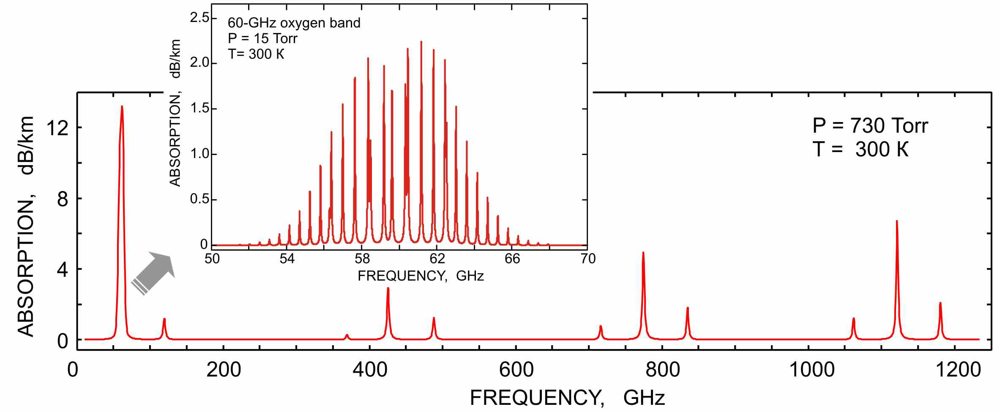
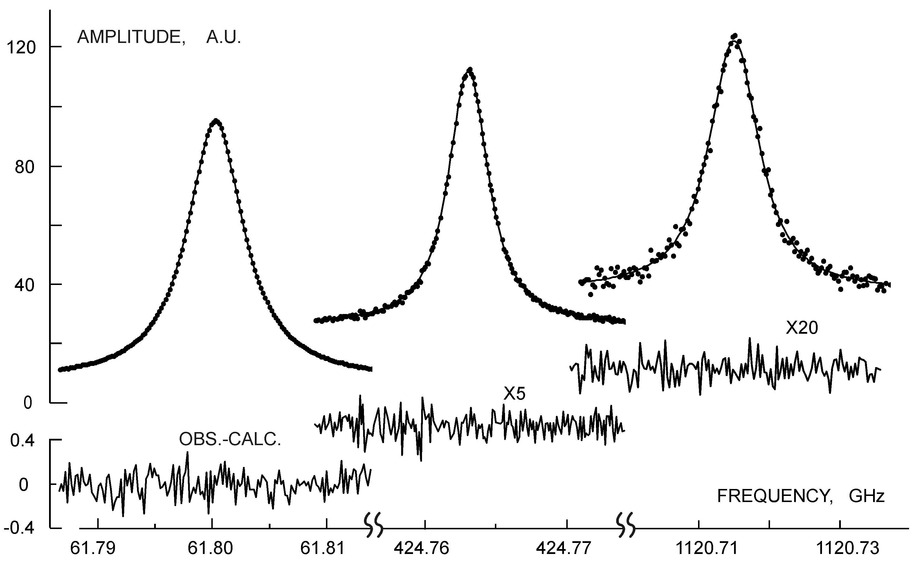

Instruments RAD Spectrometer Example
of broadband study RAD Spectrometer Example
of broadband study
Example of broadband study of molecular spectrum using submillimeter
frequency synthesizer and RAD gas cell
Oxygen absorption spectrum in MM-SubMM range calculated using MPM model.
All lines of the spectrum were studied in our Lab:


Lines of the oxygen molecule (from left to right):
a) fine-structure line 11+ at 61800.157(7) MHz;
b) rotational line (N,J)=(3,2)-(1,2) at 424 763.023(2) MHz;
c) rotational line (N,J)=(7,6)-(5,6) at 1.120714836(40) THz.
The RAD spectrometer supplied with a frequency synthesizer was used.
The result of the line fitting to Voigt profile is shown by solid line. The
residue of the fit is shown in the lower part of the figure.
For more details see Ref. 2
(2002) and Ref. 6
(2005).
See also studies of the 60-GHz band, the 118-GHz line and the first rotational triplet of O2 by the resonator spectrometer at atmospheric pressure. |